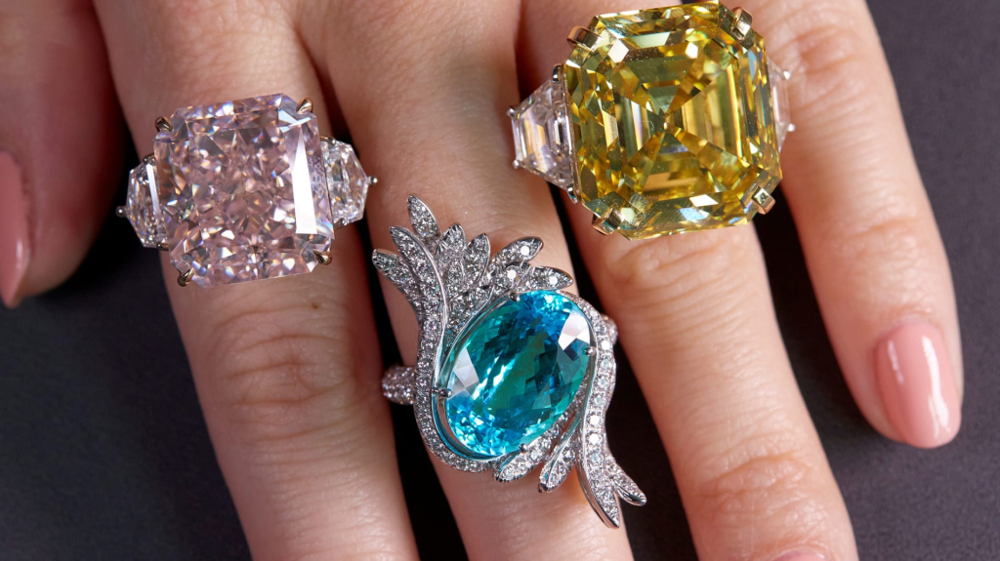
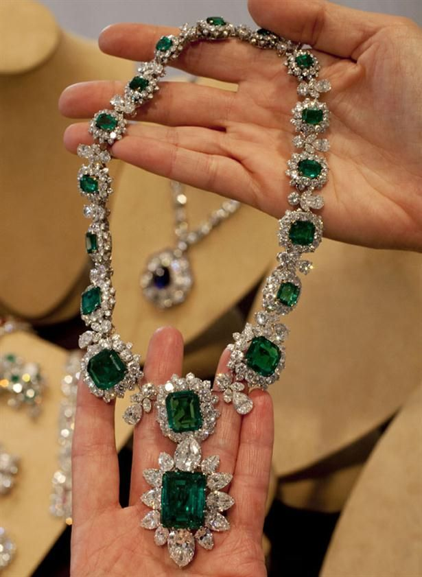
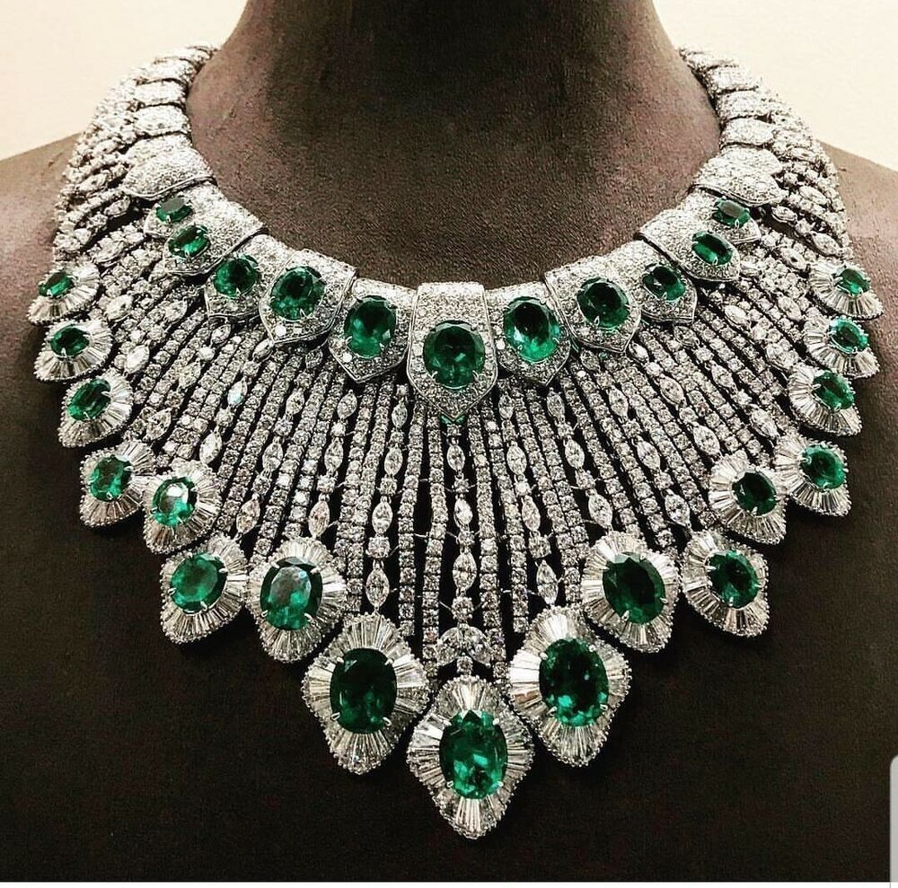
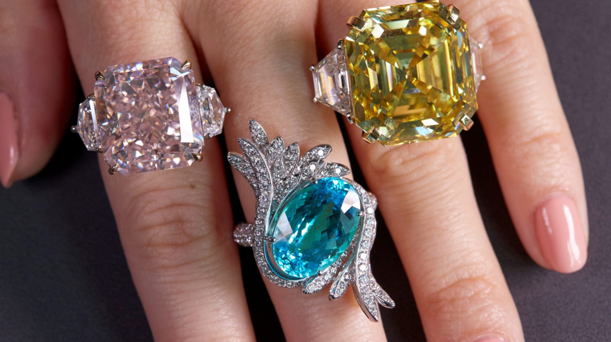
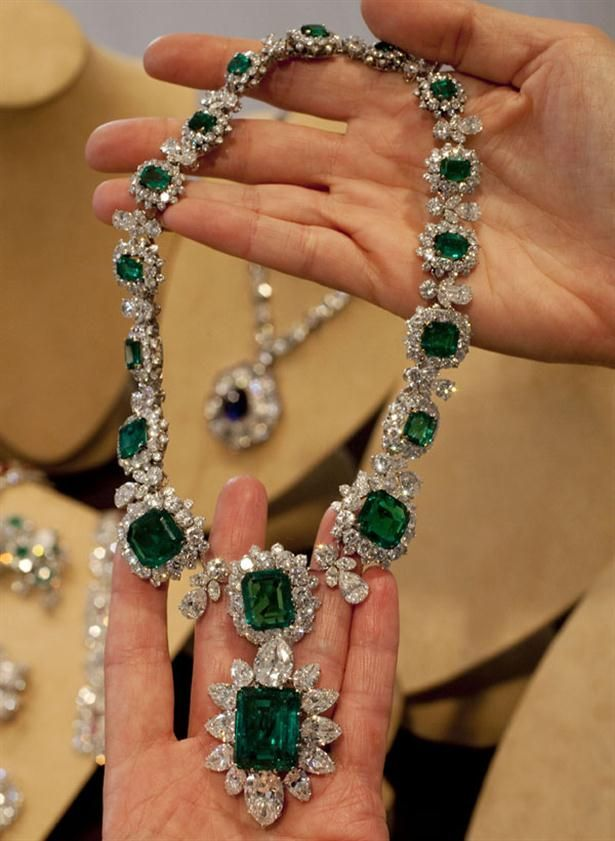
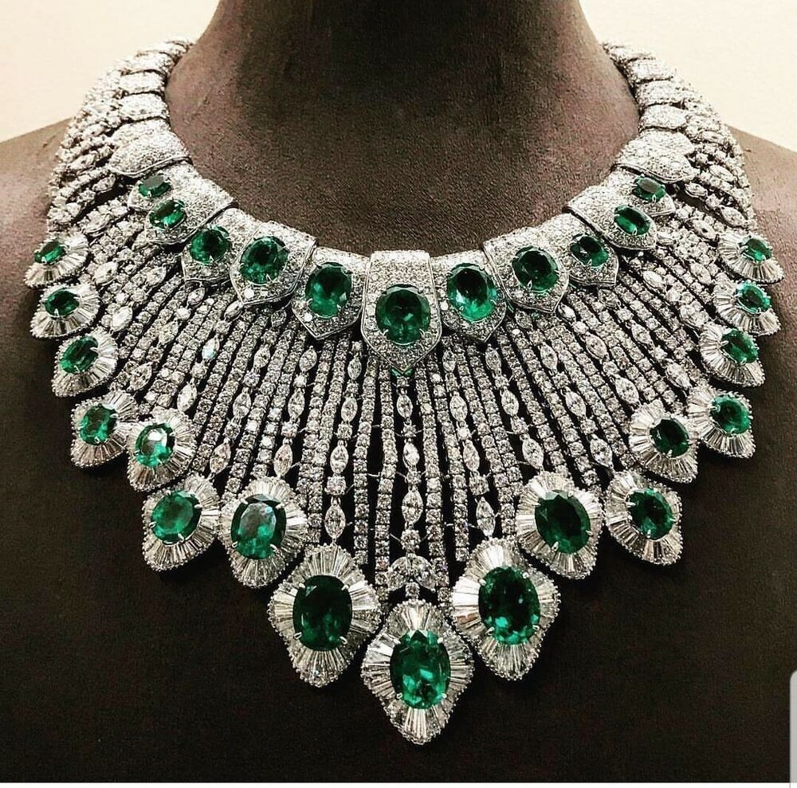

¿Por qué comprar MEXA Jewerly?
- Las joyas MEXA son genuinas, contemporáneas y femeninas e inspiran a las mujeres a expresar su individualidad
- Cada mujer posee una personalidad única que merece ser valorada y contada por una joya.
- Historias reales y personales creadas por instantes o momentos especiales.
A las mujeres les apasiona la joyería ya que representa un símbolo de feminidad e incluso de estatus social.
La joyería siempre ha hecho que las mujeres se sientan bellas y seguras. La trascendencia de la joyería reside en su capacidad para resaltar la belleza natural de una mujer.
Las joyas son un detalle ideal que forman parte de la vida de las mujeres casi desde que nacen porque a los pocos meses de venir al mundo las madres se ocupan de ponerles pequeños pendientes de oro que llevan durante la niñez, posteriormente se les cambian por otros según la edad hasta que ya son adolescentes y ellas mismas van cambiando sus pendientes e incorporando otras joyas a su cuerpo como colgantes de plata personalizados, anillos, collares, pulseras, etc.
En algunas familias las joyas heredadas de generaciones anteriores son usadas incluso como amuletos de la buena suerte y quien las lleva no las deja nunca porque piensa que sin ellas no se sentirá igual de bien.